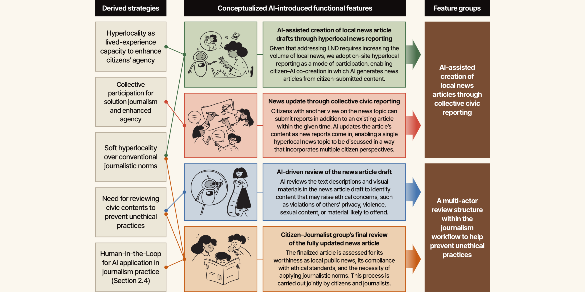

Designing a Citizen-Empowered Model for Local Journalism Participation through Situated Civic Knowledge and AI-Assisted Workflow, DIS 2026
Sangyun Lee and Kyungho Lee. Designing a Citizen-Empowered Model for Local Journalism Participation through Situated Civic Knowledge and AI-Assisted Workflow. ACM Designing Interactive Systems (DIS’26). https://doi.org/10.1145/3800645.3812829
Statement
This pictorial examines how local journalism can give citizens more meaningful power to report and shape news about their own communities. It responds to local news desertification, where shrinking local media reduces access to reliable community information, and argues that existing citizen-participatory journalism still leaves most editorial authority with professional journalists. Using a Participatory Design approach with 14 citizens and three journalists, the researchers identify key principles for a more citizen-empowered model: supporting hyperlocal reporting based on lived experience, enabling multiple citizens to contribute to the same issue, valuing everyday “soft” news as well as conventional hard news, and retaining ethical review to prevent problems such as privacy violations. They then propose a citizen-AI journalism platform in which citizens submit local reports, AI helps turn them into articles and checks for ethical risks, additional citizens can add perspectives, and citizens and journalists jointly review the final article. In this model, AI is not a replacement for journalists but a tool for organizing collective participation. The pictorial ultimately proposes Community News Resilience as the capacity of a community to continuously create, share, and sustain locally meaningful news through citizen participation and human–AI collaboration.
이 논문은 지역 주민들이 자신의 일상과 직접 관련된 뉴스를 보다 주도적으로 만들고 결정할 수 있도록 지역 저널리즘을 어떻게 재설계할 수 있는지 탐구합니다. 연구는 지역 언론이 축소되면서 신뢰할 만한 지역 정보가 줄어드는 지역 뉴스 사막화 문제와, 기존 시민참여 저널리즘에서도 최종 편집 권한이 대부분 전문 언론인에게 남아 있다는 한계에서 출발합니다. 연구진은 시민 14명과 언론인 3명을 대상으로 참여적 디자인 연구를 진행한 뒤, 시민의 실제 생활 경험에 기반한 하이퍼로컬 뉴스, 여러 시민의 집단적 참여, 일상적이고 개인적으로 의미 있는 ‘소프트 뉴스’의 인정, 그리고 개인정보 침해 등을 방지하기 위한 윤리적 검토가 중요하다고 제안합니다. 이를 바탕으로 시민이 지역 소식을 제출하면 AI가 기사 초안을 작성하고 윤리적 문제를 점검하며, 다른 시민들이 추가 관점을 보태고 마지막에는 시민과 언론인이 함께 기사를 검토하는 시민-AI 참여형 저널리즘 플랫폼을 제안합니다. 여기서 AI는 언론인을 대체하는 존재가 아니라 시민들의 다양한 경험과 참여를 조직하는 도구이며, 궁극적으로 논문은 지역사회가 스스로 의미 있는 뉴스를 지속적으로 생산하고 공유할 수 있는 능력을 Community News Resilience라는 개념으로 설명합니다.